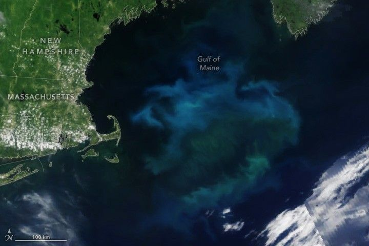

A Booming Bloom Returns to the Gulf of Maine
In summer 2025, waters in the Gulf of Maine popped with vivid swirls of blue and green. The cause was a massive bloom of phytoplankton—microscopic plant-like organisms that often float near the ocean surface. Scientists say it was one of the largest blooms of its kind to show up in the gulf’s waters in recent years.
The OCI (Ocean Color Instrument) on NASA’s PACE (Plankton, Aerosol, Cloud, ocean Ecosystem) satellite captured this image of the colorful waters on June 21, 2025. According to Catherine Mitchell, a satellite oceanographer at Bigelow Laboratory for Ocean Sciences, the bloom contained coccolithophores. Armored with plates of highly reflective calcium carbonate, this type of phytoplankton makes water appear milky blue.
The tiny organisms, along with other types of phytoplankton, including diatoms that bloom here in spring, lie at the base of the marine food web. Their presence—or absence—in Gulf of Maine waters can affect the entire ecosystem, from finfish to shellfish, and the region’s fisheries that depend on them.
Starting around 2010, coccolithophore blooms like this one became less common in gulf waters, according to Mitchell. In recent years, however, they have started to rebound. (Scientists have also noticed an increase in dinoflagellates—a type of phytoplankton with whip-like tails—as well as a decades-long decline in phytoplankton productivity.)
These changes in the Gulf of Maine’s phytoplankton communities have occurred amid changing water conditions. For example, wet years between 2006 and 2009 caused gulf waters to freshen. And starting in 2008, deep, warm water from the North Atlantic caused gulf waters to warm from the bottom to the surface, Mitchell noted. In spring 2025, however, bottom-water temperatures were cooler than they have been in two decades.
The relationship between these changing water conditions and phytoplankton communities in the gulf remains unclear, but ongoing research could begin to provide some answers. In fact, Mitchell and colleagues scrutinized this PACE image just days before heading out on a research expedition to study the bloom and other ocean properties up close. The cruise, the third so far this year, offers scientists the chance to validate ocean color data collected by PACE with real-world ocean samples.
“A major benefit of PACE is its ability to ‘see the rainbow,’” Mitchell said. By measuring ocean color in more detail and at a higher resolution than previous satellites have, PACE provides the opportunity to distinguish groups of phytoplankton—in this case, coccolithophores. “With our continuing field measurements, we will validate ocean color observations from PACE, enabling satellite observations in the Gulf of Maine and supporting the region’s fisheries and aquaculture industries.”